OUR SERVICES
What we can do.
Our 23 years of experience in dealing with different types of buyers, agents and buying agencies we can definitely provide a highly customized and seamless service to our customers. We have a prefect combination of dedication and experience to execute the vision into reality.
FABRIC SELECTION
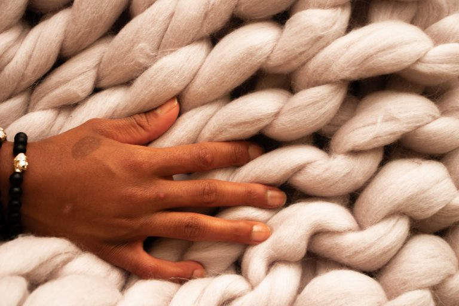
Fabric selection is a crucial step in designing a project because fabrics are designed for specific applications, a fabric manufactured for one purpose, may not be adaptable for another use. Therefore selecting the appropriate fabric is only the first step in providing serviceable fabrics for apparel manufacturing. Designers specify the fabric as part of their design concept. Designers may develop new styles for fabrics that have been successful.
PRODUCT DESIGNING
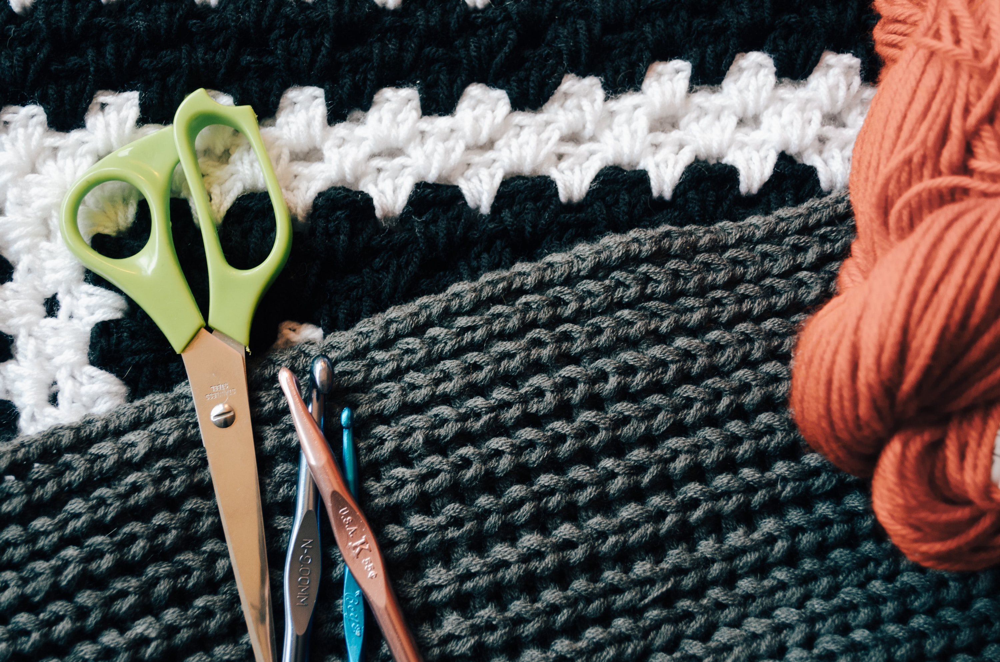
An inspection is an activity such as measuring, examining, testing or gauging one or more characteristics of a product and comparing the results with specified requirements in order to establish whether conformity is achieved for each characteristic. The term inspection refers to the activity of checking products, whereas audit applies to analyzing manufacturing processes and/or systems. The quality inspector usually follows a pre-established checklist that is based on the product specifications.
MERCHANDISING
Logistics Services refer to the process of managing the flow of operations between the point of collection to the point of delivery. This includes all the mechanisms, warehouses, people and resources that are involved throughout the entire delivery process.
PRODUCT MANUFACTURING
Manufacturing is the creation and assembly of components and finished products for sale on a large scale. It can utilize a number of methods, including human and machine labor, and biological and chemical processes, to turn raw materials into finished goods by using tools. Production is similar but broader: It refers to the processes and techniques that are used to convert raw materials or semi-finished goods into finished products or services with or without the use of machinery.
QUALITY INSPECTION
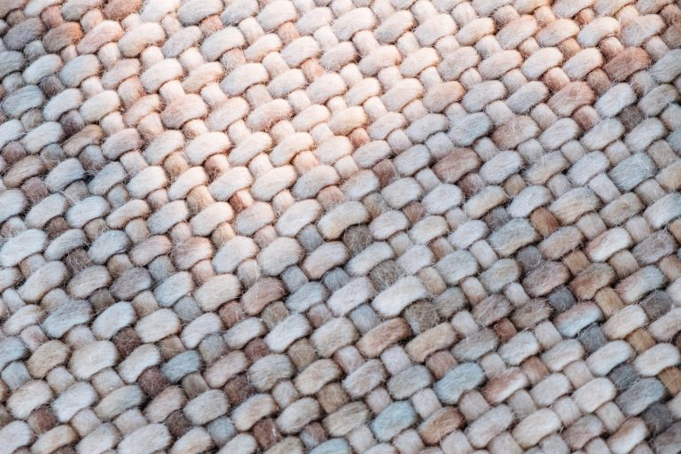
An inspection is an activity such as measuring, examining, testing or gauging one or more characteristics of a product and comparing the results with specified requirements in order to establish whether conformity is achieved for each characteristic. The term inspection refers to the activity of checking products, whereas audit applies to analyzing manufacturing processes and/or systems. The quality inspector usually follows a pre-established checklist that is based on the product specifications.
LOGISTICS AND DELIVERY
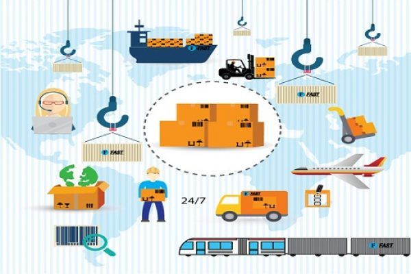
Logistics Services refer to the process of managing the flow of operations between the point of collection to the point of delivery. This includes all the mechanisms, warehouses, people and resources that are involved throughout the entire delivery process.
A COMPLETE VERTICALLY INTEGRATED UNIT
High Quality & Powerful
WEAVING
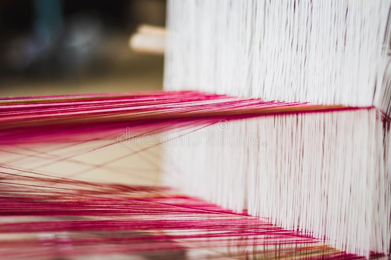
Weaving is a method of textile production in which two distinct sets of yarns or threads are interlaced at right angles to form a fabric or cloth. Other methods are knitting, crocheting, felting, and braiding or plaiting. The longitudinal threads are called the warp and the lateral threads are the weft or filling.
TUFTING
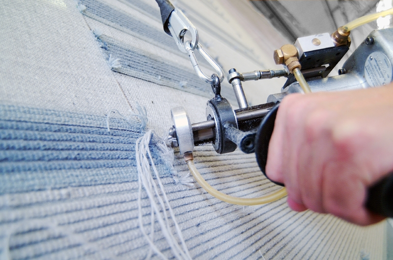
Tufting is a type of textile weaving in which a thread is inserted on a primary base. It is an ancient technique for making warm garments, especially mittens. After the knitting is done, short U-shaped loops of extra yarn are introduced through the fabric from the outside so that their ends point inwards.
CUTTING
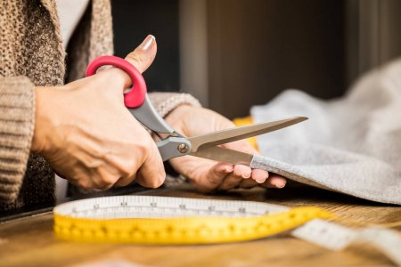
During cutting the marker is applied to top ply of lay. The objective of cutting is to separate fabric parts and replicas of pattern pieces in the marker plan. By accurate cutting we can minimize the fabric wastage and without fabric cutting it is impossible to get uniform finished fabric to prepare the pattern pieces for proper sewing.
STICHING
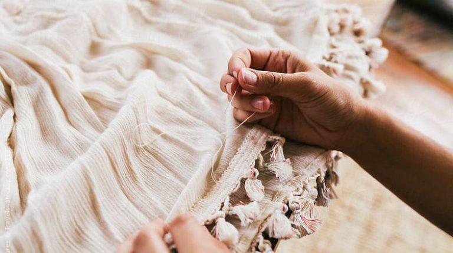
In the textile arts, a stitch is a single turn or loop of thread, or yarn. Stitches are the fundamental elements of sewing, knitting, embroidery, crochet, and needle lace-making, whether by hand or machine. A variety of stitches, each with one or more names, are used for specific purposes.
DIGITAL PRINTING
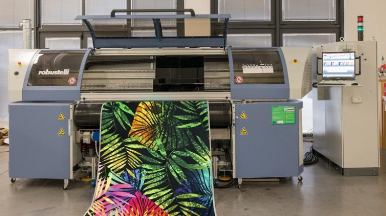
Digital printing refers to methods of printing from a digital-based image directly to a variety of media. It usually refers to professional printing where small-run jobs from desktop publishing and other digital sources are printed using large-format and/or high-volume laser or inkjet printers
LATEX BACKING
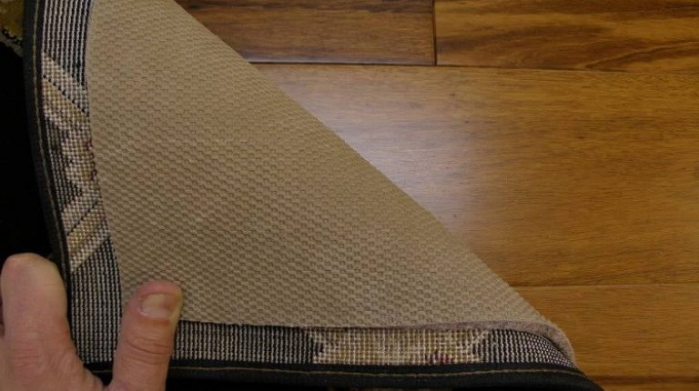
The CL latex backing consists of water-based, synthetic SBR latex (styrene-butadiene rubber). The backing contains no softening agents or solvents. The latex is protected with antioxidants to ensure that its properties last for a long time, and it is very resistant to degradation during use.
METAL DETECTION
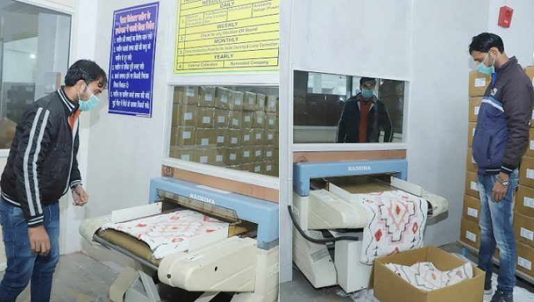
A metal detector is an electronic instrument that detects the presence of metal nearby. Metal detectors are useful for finding metal inclusions hidden within objects, or metal objects buried underground. They often consist of a handheld unit with a sensor probe which can be swept over the ground or other objects.
FINISHING
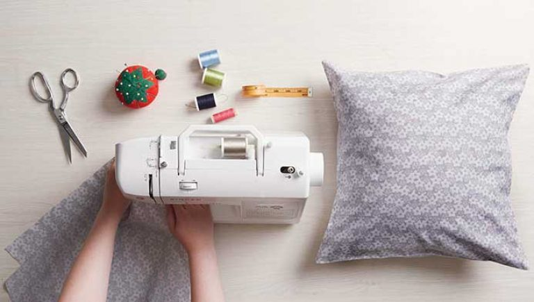
Materials or products which have received the final increments of value through manufacturing or processing operations, and which are being held in inventory for delivery, sale, or use.
PACKAGING & DISPATCH
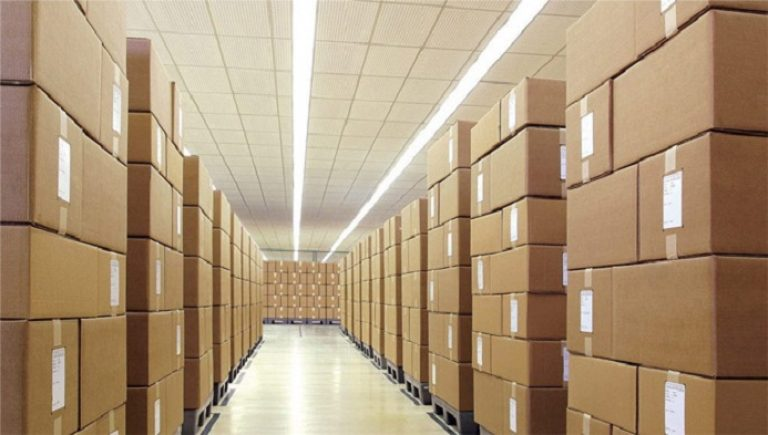
Logistics refer to the process of managing the flow of operations between the point of collection to the point of delivery. The provider of the logistics services handles processes such as inventory, shipping, packaging, warehousing and security functions for shipments
OUR PROCESS
Your creative process.

PLAN
Research & fieldwork.
DESIGN
Creating a strategy.
BUILD
Design & development.
REVIEW
Deploying the product